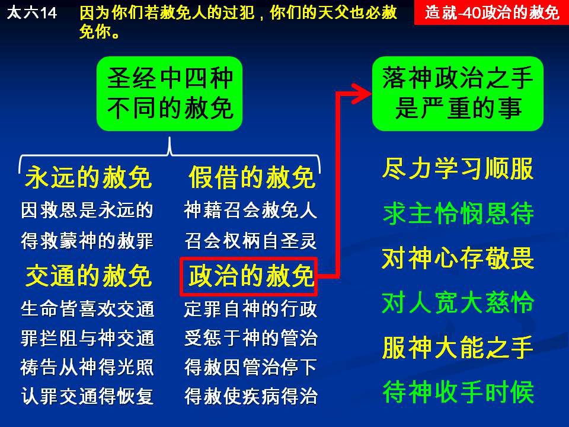

诗歌：228首、273首
重要经文：
马太福音六章十四至十五节：因为你们若赦免人的过犯，你们的天父也必赦免你们；你们若不赦免人的过犯，你们的父也必不赦免你们的过犯。
马太福音九章二节：看哪，有人用卧榻抬着一个瘫子到祂跟前来。耶稣见他们的信心，就对瘫子说，孩子，放心罢，你的罪赦了。
马太福音十八章三十四至三十五节：主人就大怒，把他交给掌刑的，直到他还清了一切所欠的债。你们各人若不从心里赦免你的弟兄，我天父也要这样待你们了。
纲目要点：
壹 在圣经里，有四种不同的赦免：
一 永远的赦免－路二四 47、罗四 7。
二 假借的赦免－约二十22~23。
三 交通的赦免－约壹一 7~9，二 1~2：
1生命的特点喜欢交通。
2生命的交通会出事情。
3如何恢复和神的交通。
四 政治的赦免：
1什么是神政治的赦免。
2 主医治瘫子的病是一种政治的赦免－太九 2。
贰 落在神政治的手下是一件严重的事：
一 尽力学习顺服主并求主怜悯。
二 要敬畏神并对人宽大－太十八23~35。
三 『到了时候』神政治的手才能过去－彼前五 6。
信息选读：
永远的赦免－主耶稣赦免一切的罪
关于我们得救的赦免，可给它起一个名字，叫作神永远的赦免。这就是主耶稣在路加二十四章所说的赦免： 『并且人要靠着祂的名，传悔改以得赦罪之道，从耶路撒冷起，直到万邦。』 （47。）这就是永远的赦免。罗马四章七节所说的赦免，也是永远的赦免。这一类的赦免，所以称它作永远的赦免，乃是因为神一次赦免我们的罪，就把我们的罪永远赦免了！神把我们的罪扔在大海里，丢在深渊里，祂就不再看见，不再记念了。这就是我们得救的时候所得着的赦免。每一个人，当他一信主耶稣的时候，主耶稣就赦免他一切的罪，除去他一切的罪。他在神面前再没有留下一个罪了。这就叫作永远的赦免。
假借的赦免－神借着人的手来宣告说，谁的罪得赦免
我们传福音的时候，有时遇见这样一个罪人，你传福音给他听，他就觉得有罪。你把他带到神的面前，他就承认自己是一个罪人，他求神赦免他的罪，他是痛哭流泪，懊悔，诚心接受主耶稣。可是，因为他是一个外教人，他根本不知道什么叫作赦免。这时，在召会里如果有代表站起来，说，『神赦免了你的罪！』这是最好的事。因为这能省去他许多的苦，省去他许多在疑惑里的摸索。为什么有的人你给他施浸，有的人你不给他施浸？有的人你接纳他擘饼，有的人你不接纳他擘饼？因为召会运用主所给她的权柄，宣告说，谁是得救的，谁是不得救的；谁的罪是赦免的，谁的罪是留下的。假借的赦免是神借着人的手来宣告说，谁的罪得赦免了。
交通出事情
我们相信主之后，得救了之后，如果得罪了神，我们和神中间的交通就出事情，我们和神众儿女的交通也出事情。什么叫作交通出事情？比方有一个小女孩，当她母亲出门的时候，她偷偷的跑到厨房里去，把母亲作的菜，或者橱里的水果，或者别的东西，拿来大吃一顿。吃完之后，也许把厨房的门关得好好的，嘴也洗得干干净净的，桌子也擦得干干净净的。但罪是已经犯了！本来每天晚上，她和母亲是非常亲密的，今天因为偷吃了东西，她就不能像平常那样亲密。母亲在楼上一喊，她在楼下心就跳起来，以为母亲要来打她。就是母亲给她东西吃，她也不觉得有味道。因为她怕母亲已经知道她所作的事，所以总想要躲母亲。你看见她和母亲的交通出了事情。不是说偷吃了东西，女儿不是女儿了。女儿还是女儿，可是与母亲的交通出了事情。不是你犯了罪，就不是神的儿女了；你还是神的儿女，可是与神中间的交通出了事情。犯了罪，马上交通就断绝了！那偷东西吃的女孩，她必须到母亲的面前，说，『我偷吃了一些饼，我偷吃了你所作的菜，我偷吃了你放在那里的水果，这是不应该的。』她要学习站在母亲这一边，说这一个是罪。她要说，『求你赦免我的罪！』这一个赦免，与永远的得救不发生关系，但是和神的交通发生关系，所以称它作交通的赦免。
什么是神政治的赦免
神的政治，就是神的办法，神的管理。母亲能赦免这一个孩子的罪，对她说，你吃了，就算了。能赦免她的罪，能恢复交通。她看见母亲，也能照旧的很快乐，很亲密。但是下一次母亲出门的时候橱要锁起来，厨房的门要锁起来。换一句话说，办法两样了。交通可以恢复，办法不那么容易恢复。因为母亲怕这一个孩子再那样作。母亲不给她自由了，母亲给她一个限制。办法改变了。请你们记得，神对待我们，也是一样的。交通的赦免是容易的。所有诚心认罪的人，肯承认得罪神的人，交通的恢复是容易的事。当他一承认罪的时候，神和他就恢复了交通。但是，也许神对他的办法，马上就要两样。神的管教，也许就在他身上；也许神就不让他再那样自由，不让他再那样随便。等到有一天，神把这个管教的手拿去了，我们就称它作政治的赦免。等到有一天，母亲觉得说，这一个孩子靠得住了，厨房的门可以不锁了，这一个就叫作政治的赦免。
学习服在神大能的手下
与神失去交通的罪，很容易赦免，很容易恢复。但是，在环境里、在家庭里、在事业里、在个人的身体上，神所给你的管治，你不能动。你在那里，只有学习服在神大能的手下。我们越服在祂大能的手下，越不抵挡，神政治的手越容易挪开。越是在那里不服，越是性急，在里面有话，在里面不平，我告诉你说，神政治的手越难挪开。比方说，有的弟兄从年幼就喜欢吃糖，吃糖太多，牙齿被虫蛀了。有一天觉得说，我吃糖太多，所以牙齿生病，就求神赦免你糊涂吃糖的罪。这一个罪很容易得到神的赦免。但这不是说，牙齿就不蛀了；牙齿还是蛀，因为这是神的政治。你吃糖，牙齿就得蛀。你认罪，交通可以恢复。但并不是说，你认了罪，就长出好的牙齿来。当你看见神的政治的时候，你要学习服在这一个下面。当然，像牙齿的蛀是不能恢复的。但有的事情，神政治的手可以挪去，可以恢复。
要敬畏神并对人宽大
惹动神管治的手到你身上来，这不是上算的事，这是一个极大的难处，而且是非常严肃的事！我们所定罪的事，因着我们随便说，就临到我们的身上。种的是什么，收的也是什么。这一个，在神的儿女身上，是非常实在的。盼望我们要学习宽大，因为越宽大，越上算；你在神面前，越是宽大的对待人，神也越宽大的对待你。我要说，我知道这件事。你如果刻薄的对待弟兄，严格的对待弟兄，神在你身上，也要刻薄的对待你，严格的对待你。你要学习温柔的、慈心的、宽大的对待弟兄。许多事情，让人去作，少说闲话，少去批评。人碰着困难的时候，是我们该帮助的时候，不是我们该批评的时候。因着许多人不知道什么叫作神的政治，所以出了许多难处。我盼望神的儿女，第一天、第一年，就能知道神的政治。这样，他们在所走的路上，就能非常正直的往前面去。
（摘自初信造就第四十篇）课程复习：
一 请说明什么是永远的赦免与假借的赦免？
二 什么叫作交通出事情？
三 什么是神政治的赦免？
四 我们为什么学习服在神大能的手下？
五 为什么惹动神管治的手，不是上算的事，而且是非常严肃的事？
辅助图表：
